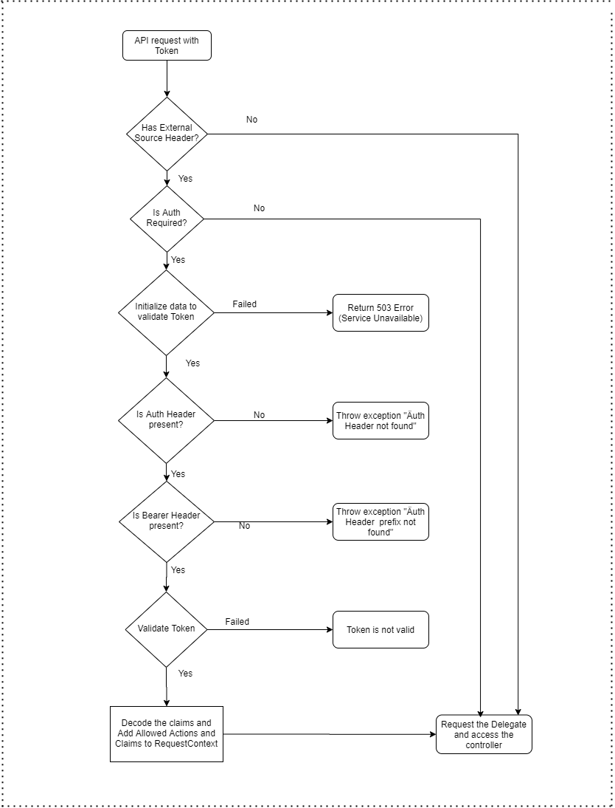

Authorization Architecture
This documents explains the flow of the authorization in Serenity platform.
The authentication and authorization microservice manages the users authorized to access the solution. User management can be done using any identity service provider that supports OpenId Connect.
What is a JWT?
A JWT (JSON Web Token) is a compact, URL-safe means of transferring information that contains JSON objects encoded and serialized for transmission.
How is this used?
We can get user information like name and roles values from the JWT token. In this implementation, we use Azure AAD tokens.
The claims are added to the AAD application manifest so that the token contains the desired information. You can learn more about optional token claims here.
We can also get access token for resources by using application's credential so that Azure resource management task can be performed. The current user who has the role which includes 'AcquireToken' will be able to get this token.
Authorization Logic
In Serenity, we are handling authorization as part of AuthMiddleware for the every request in the api.
As part of authorization, we will be verifying whether the request has AuthHeader, Bearer header, auth token present and send the response validating the auth token either a success or an exception message appropriately which needs to be handled in the respective source.
Below is the flow diagram for the Authorization.
